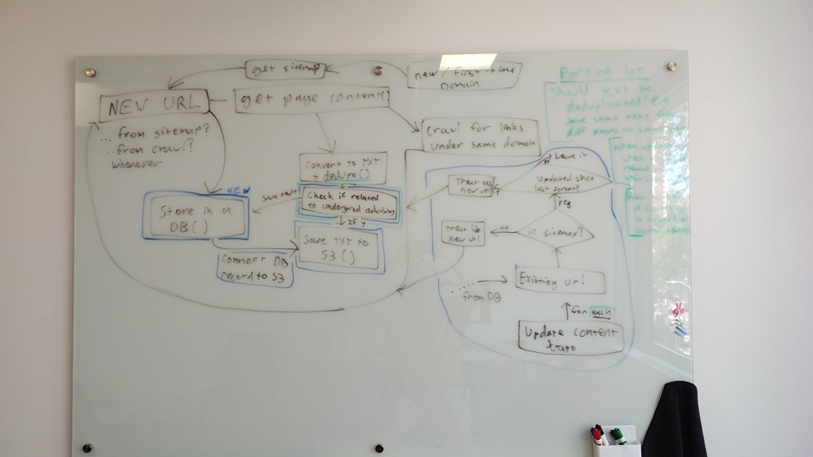

Architecture & Citations
APO Bot Content Pipeline — Technical Architecture for Mixed Audience
Executive Summary
- Platform uses Responses API (stateless), not Agents SDK
- file_search is a 6-component pipeline (embed → rank → generate)
- Two independent citation creators: tool logic (annotations) + model (PUA markers)
- Annotations have
file_idbut no URL — that’s the gap
- Add
include=["file_search_call.results"] - Join
search_resultsto annotations by file_id - Populate
url+titlefrom attributes - ~15 lines, zero extra API calls
1. Pipeline Overview
Content flows through 7 stages from a Harvard website to a student's citation. Each stage transforms the data in a specific way.
Pipeline trigger — file_search tool configuration chat_send_message.py:800-805
# Prepare tools for file search if vector_store_id is available
tools = []
if vector_store_id:
tools.append({
"type": "file_search",
"vector_store_ids": [vector_store_id],
"max_num_results": 20
})2. Scraper — Overview
An async Python crawler (aiohttp, lxml, trafilatura) that fetches Harvard department sites and produces clean text files for vector store ingestion. Forked from Ventz — ours to modify.
Scale
What It Produces (Two Files Per Page)
1. Raw HTML (archive)
The full HTML page as downloaded. Nav, CSS, scripts, everything. Kept as source material — not uploaded to vector store.
output/html/german.fas.harvard.edu/about.html
2. Extracted Content (uploaded)
Trafilatura strips nav/chrome and extracts main body text. Scraper adds a 4-line metadata header (Source URL, Domain, Title, Timestamp). This is what goes to S3 and into the vector store.
output/text/german.fas.harvard.edu/about.txt
Components & How a Page Flows Through
The scraper is a single Python file (app.py, ~700 lines). Click a component tag to expand/collapse its pipeline step.
Click a component tag or step header to collapse/expand.
Configuration & Flags
The scraper's behavior is controlled by two types of levers: CLI flags (passed at runtime on the command line) and CONFIG values (hardcoded constants in app.py). Flags control what to scrape; config controls how to scrape.
EXAMPLE 1: Targeted fetch (no link-following)
uv run python app.py --file urls_test.txt --no-crawlOutcome: Fetches only the URLs listed in the file. No link discovery, no queue growth. Good for testing a handful of pages or re-scraping specific content.
EXAMPLE 2: Fresh full crawl of a single domain
uv run python app.py https://german.fas.harvard.edu/ --fresh --concurrent 1Outcome: Clears saved state, crawls entire domain following all same-domain links. Concurrency=1 avoids 503 errors. Takes ~16 min for a ~1,700 page site.
Scraper CONFIG defaults app.py:24-33
CONFIG = {
'max_concurrent': 100, # Too high — 503s. Target: 10-20 with backoff
'timeout': 30, # Request timeout in seconds
'max_retries': 3,
'user_agent': 'Mozilla/5.0 ...',
'delay_between_requests': 0.1,
'max_file_size': 100 * 1024 * 1024,
'checkpoint_interval': 30,
'progress_interval': 5,
}| Config / Flag | Type | Default | What It Controls | Code Ref |
|---|---|---|---|---|
--concurrent |
CLI flag | 100 | Max simultaneous HTTP requests via asyncio.Semaphore |
▼ view |
--no-crawl |
CLI flag | OFF (crawl) | Don't follow links — only fetch given URLs | ▼ view |
--fresh |
CLI flag | OFF (resume) | Wipe SQLite state and restart from seed URL | ▼ view |
--file |
CLI flag | — | Read URLs from a file instead of single seed URL | ▼ view |
deduplicate |
CONFIG | True | Trafilatura cross-page dedup — silently removes repeated text | ▼ view |
output_format |
CONFIG | 'markdown' | Controls whether headings are preserved as ## in output |
▼ view |
checkpoint_interval |
CONFIG | 30s | How often queue + stats are saved to SQLite for crash recovery | ▼ view |
--concurrent — how it controls request rate app.py:244, 371-374, 560
# app.py:244 — Semaphore created from config
self.semaphore = asyncio.Semaphore(CONFIG['max_concurrent'])
# app.py:371-374 — TCPConnector also respects the limit
connector = aiohttp.TCPConnector(
limit=CONFIG['max_concurrent'],
limit_per_host=CONFIG['max_concurrent'])
# app.py:482 — every URL acquisition goes through the semaphore
async with self.semaphore:
# only N requests can be in-flight at once
await asyncio.sleep(CONFIG['delay_between_requests'])
content, content_type, kind, status = await self.fetch_with_retry(url)--no-crawl — disables link following app.py:514-519
# app.py:514-519 — after extracting links from a page
if self.no_crawl:
self.logger.debug(f"No-crawl mode: found {len(links)} links on {url} (not following)")
else:
for link in links:
if not self.url_store.contains(link):
self.urls_to_visit.append(link)
# With --no-crawl, queue stays at exactly the seed URLs.
# Without it, queue grows as links are discovered.--fresh — clears saved state app.py:286-300
# app.py:286-300 — constructor decides resume vs fresh start
if fresh:
self.url_store.clear() # wipes visited, queue, stats, file hashes
self.urls_to_visit = deque([start_url])
self.logger.info("Fresh start: cleared previous state")
else:
saved_queue = self.url_store.load_queue()
if saved_queue and self.url_store.count > 0:
self.urls_to_visit = saved_queue # resume from checkpoint
self.logger.info(f"Resuming: {self.url_store.count} visited")--file — batch URL input app.py:664-676
# app.py:664-676 — reads file, groups URLs by domain
with open(args.file) as f:
urls = [line.strip() for line in f if line.strip()]
# Groups by domain → each domain gets one WebsiteScraper instance
by_domain: dict[str, list[str]] = {}
for url in urls:
domain = urlparse(url).netloc
by_domain.setdefault(domain, []).append(url)
# All domains run concurrently (asyncio.gather)deduplicate — trafilatura cross-page dedup app.py:107-116
# app.py:107-116 — passed to trafilatura.extract()
text = trafilatura.extract(
html_content, url=url,
include_tables=True,
include_links=True,
favor_recall=True,
deduplicate=True, # ← removes text seen on earlier pages in same domain
output_format='markdown')
# Problem: if FAQ page repeats text from /about,
# the second page's output is silently stripped.
# Some pages produce NO output file at all.output_format — text vs markdown extraction app.py:116
Trafilatura reads the HTML <h1>, <h2>, <h3> tags from the source page. With 'txt' it discards them. With 'markdown' it converts them to #, ##, ### — preserving the page structure that creates better block boundaries.
# app.py:116 — controls trafilatura output mode
output_format='markdown' # preserves headings as ## in output
# With 'markdown': <h2>Advising</h2> → ## Advising
# With 'txt': <h2>Advising</h2> → Advising (plain line, no structure)
# Markdown gives better chunking boundaries for vector storecheckpoint_interval — crash recovery persistence app.py:541-546
# app.py:541-546 — background task saves state periodically
async def _checkpoint_saver(self):
while True:
await asyncio.sleep(CONFIG['checkpoint_interval']) # 30s
self.url_store.save_queue(self.urls_to_visit)
self.url_store.save_stats(self.stats)
# If scraper crashes mid-run, restart picks up
# from the last checkpoint (unless --fresh is used)3. Scraper — Issues & Open Questions
We forked the scraper — it's ours to modify. The core engine works. This section maps the issues by category and connects them to downstream concerns (platform preprocessing, citation quality, S3 delivery).
A. Access & Concurrency (Solved — With Implications)
Win: Concurrency = 1 Eliminates All 503 Errors
Jeremy tested against aaas.fas.harvard.edu (2,037 URLs discovered, 1,757 pages fetched). Dropping concurrency from 100 to 1 completely eliminates Harvard CDN rate limiting.
Result: The scraper works reliably. We have a clean, error-free crawl path.
Implications of the Win
16.8 min for one site. At 100-200 sites with hundreds to thousands of pages each, a full corpus run is days, not hours.
Refinement: Can't afford full re-runs regularly. Need to only re-scrape pages that changed, only upload files that are new/different, only sync what's actually new to S3.
Tweaking: Room between 1 and 100. Adaptive backoff (10-20?) might find a sweet spot — faster without triggering 503s.
This drives the need for diff detection at every stage (see Category C below) and smart use of the database layer (see Jeremy's architecture in Section 4).
Known: 401/403 HKey-Protected Pages
266 pages across 3 test sites returned 401/403 — login-protected behind Harvard Key. Not a scraper bug; these pages are inaccessible without credentials. Logged to access_denied.txt.
B. Scoping Issues
Domain-Level Scoping Only (No Path Filtering)
Passing https://math.harvard.edu/undergraduate sets base_domain = "math.harvard.edu" and crawls the entire domain — not just pages under /undergraduate. The --no-crawl flag is the only blunt instrument (follow all links or none).
Planned but not built: --max-pages N flag and path_prefix filtering. sites.yaml already defines path_prefix for some sites, but the scraper ignores it.
~80% of Department Pages Are Events/People/News
Full crawl of aaas.fas.harvard.edu: 1,757 pages — 862 news, 624 events, 153 people. Only ~180 pages are "core" academic content.
Cross-Page Deduplication Removes Content
Trafilatura deduplicates text across pages within a domain. If the same passage appears on an FAQ page and a standalone page, it gets removed from one. Pages with only duplicate text produce no output file at all.
Fix: Set deduplicate=False. Question: Any reason to keep cross-page dedup for a knowledge base?
Domain-level scoping (no path filtering) app.py:91-92, 241, 310-312
# app.py:310-312 — extract_domain() discards the path entirely. Test with a very long file, sample_context.md, the resulting citation/reference was vague and did not include the site name (due to title being too generic, and no head formatting/meta data.
def extract_domain(url: str) -> str:
parsed = urlparse(url)
return parsed.netloc # just the host — path is thrown away
# app.py:241 — sets base_domain from seed URL
self.base_domain = self.extract_domain(start_url)
# Input: https://math.harvard.edu/undergraduate
# Result: base_domain = "math.harvard.edu" ← /undergraduate is gone
# app.py:91-92 — follows ALL same-domain links, regardless of path
if parsed.netloc == base_domain:
links.add(normalized)
# No path-prefix check exists anywhere in the codebase.
# No sitemap parsing exists (no XML handling at all).
# The crawler discovers URLs purely by following <a> links on same domain.How URL discovery actually works (link crawl only, no sitemap)
The v1 scraper URL discovery pipeline:
- Seed URL provided (e.g.
https://economics.harvard.edu/) extract_domain()→"economics.harvard.edu"(path discarded)- Fetch page HTML →
_extract_links_lxml()parses all<a>tags - Each discovered link:
parsed.netloc == base_domain? → add to queue - Repeat until queue empty (or
--no-crawlstops at step 1)
What does NOT exist in the v1 code:
- No sitemap.xml fetching or XML parsing (confirmed: zero sitemap/XML references in
app.py) - No
path_prefixfiltering (sites.yaml defines it, scraper ignores it) - No
--max-pagescap - No robots.txt checking
Jeremy's whiteboard shows "get sitemap" as a step — this is either planned new work or something in Ventz's unreleased updates. It is not in the current codebase.
Trafilatura dedup setting app.py:107-116
text = trafilatura.extract(
html_content,
url=url,
include_comments=False,
include_tables=True,
include_links=True,
include_images=False,
favor_recall=True,
deduplicate=True, # <-- cross-page dedup: removes text seen on earlier pages
output_format='markdown',
)
# Set False to keep all content per-page.C. Diff Detection (Cross-Cutting — Same Problem at Every Stage)
With full runs taking days, we need to know what changed without re-running everything. The same question appears at three stages, each with different costs:
| Stage | Question | Current State | Cost of Not Having It |
|---|---|---|---|
| 1. Scraper | "Has this page changed since last run?" | No content diffing. Either skip (resume) or re-scrape everything (fresh). | Re-fetching tens of thousands of unchanged pages. Hours of runtime wasted. |
| 2. S3 Upload | "Is this file already in S3 and unchanged?" | No check before PUT. Uploads everything every time. | Unnecessary S3 PUT requests (cost $$$). Also: S3 reads cost money — checking "what's already there?" by listing/reading from S3 is itself expensive at scale. |
| 3. FileSync | "Is this S3 object new/changed vs. what's in vector store?" | Solved. ETag/hash comparison built in. | Already handled — but it still has to read from S3 to compare. If we upload unchanged files, FileSync does unnecessary work. |
The Database Layer Solves This (Jeremy's Architecture)
A local DB (SQLite or similar) that stores: URL, content hash, timestamp, S3 key, filename. Enables:
- Scraper stage: "I last scraped this URL on date X with hash Y. Re-fetch and compare hash — if same, skip extraction/upload."
- S3 stage: "I know the filename and hash for this content. DB says S3 already has this exact file. Don't PUT."
- Manifest: DB is the authoritative URL → filename → S3 key mapping. Generate
manifest.jsonfrom it.
Current change detection: scraper vs FileSync app.py:134-146, sync_engine.py:174-175
# SCRAPER: tracks URLs visited (don't re-fetch in same run)
# and document hashes (don't save identical PDFs twice)
# NO content-level change detection for HTML pages across runs.
# FILESYNC (downstream): the actual change detection layer
# sync_engine.py:174-175
if existing_hash == new_hash:
continue # Same content → skip upload to vector store
# Changed → delete old file from vector store, upload new version
# Only FileSync (S3 path) has this. Wizard and Admin UI are stateless.D. Output Issues (As They Relate to Citations)
The scraper's output decisions directly determine citation quality downstream. (Full detail in Section 5: Scraper Output Formats)
Issue: .txt output throws away heading structure
Current: output_format='txt'
Students concentrating in German
should meet with their advisor early
in sophomore year to plan coursework.
Course Requirements
The concentration requires a minimum
of 12 half-courses in German language
↑ flat text, no structure, no blank lines
Target: output_format='markdown'
Students concentrating in German
should meet with their advisor early
in sophomore year to plan coursework.
## Course Requirements
The concentration requires a minimum
of 12 half-courses in German language
↑ headings preserved, natural chunk boundaries
Markdown headings create natural split points for the chunker (whitespace = preferred boundary). Better chunk boundaries = more precise V2 citations. (Section 5)
Issue: 4-line metadata header only survives in chunk 1
The scraper prepends source URL, domain, title, and timestamp to every file. This header is ~30 tokens at the very top. After chunking:
The model can't cite what it can't see. (Full breakdown below)
THE CORE ISSUE IN ONE PICTURE:
Example file: german_fas_harvard_edu__advising_b3c4d5e6.md — ~1,600 tokens (~1,200 words). Chunking config: 800 tokens max, 400 token overlap. Produces 3 chunks.
Domain: german.fas.harvard.edu
Title: Advising | German Department
Scraped: 2026-05-20T14:30:00Z
────────────────────────────────────────
## Undergraduate Advising
Students concentrating in German should meet with their
advisor early in sophomore year to plan coursework...
## Course Requirements
The concentration requires a minimum of 12 half-courses...
...advisor early in sophomore year to plan coursework...
## Course Requirements
The concentration requires a minimum of 12 half-courses...
Students must complete German 130 or equivalent...
## Senior Thesis
Students writing a thesis must select an advisor by...
...Students must complete German 130 or equivalent...
## Senior Thesis
Students writing a thesis must select an advisor by...
...the end of junior year. The thesis should be 60-80 pages
and written in German. Defense is scheduled in Reading Period.
## Study Abroad
Students are encouraged to spend a semester in a...
Header was tokens 1–~30. This chunk's overlap reaches tokens 801–1200 — the header is 800+ tokens away. Completely gone.
What happens when the model retrieves chunk 3:
The LLM uses surrounding content context + filename (german_fas_harvard_edu__advising_b3c4d5e6.md) to generate citations and references. But source_url is not a file attribute today — so there is no URL metadata attached to the chunk. The model improvises a URL from the filename or omits it entirely.
Potential Solutions & How the Platform Uses Citations
What the platform reads for citations today:
File attributes exist (16 slots, 6 used by FileSync) but are not surfaced in citations today. The model sees them in file_search results but the post-processor ignores them.
Approaches to ensure URL reaches every chunk:
Current: Metadata header at top of file
Domain: german.fas.harvard.edu
Title: Advising
Scraped: 2026-05-20
────────────────────────────────
## Undergraduate Advising ...
✗ Lost after chunk 1. Overlap may carry partial header into chunk 2, gone by chunk 3.
Option A: source_url as file attribute (set at upload)
{ "attributes": {
"source_url": "https://german.../advising",
"domain": "german.fas.harvard.edu"
},
"chunk_text": "## Senior Thesis\nStudents..." }
✓ Every chunk carries URL via attributes. Requires ~30-line platform change to read it in citations.
Option B: Metadata repeated per paragraph (Unicode markers)
## Undergraduate Advising
Students concentrating in German should...
src=german.fas.harvard.edu/advising
## Course Requirements
The concentration requires a minimum of...
src=german.fas.harvard.edu/advising
## Senior Thesis
Students writing a thesis must select...
✓ Every chunk guaranteed to have URL. No platform changes. Costs tokens. PUA chars (U+F8FF) invisible to users but parseable.
manifest.json: Build during scrape?
A manifest maps every filename → source URL authoritatively, independent of file contents. If we build it during scrape (from the DB layer), it's always in sync. David Heitmeyer explored this approach independently. Question: Does the platform need it, or is the attribute approach better?
E. Delivery to S3 & FileSync
Getting scraper output into S3 in a way that FileSync can efficiently process. Two layers of hash-based change detection mean unchanged pages cost effectively zero. The scraper-side decisions that matter:
Why Single-Part PUT to S3 Matters
FileSync uses ETags for change detection across all adapter paths (S3, SharePoint, Google Drive). Multi-part uploads produce composite ETags ("d41d8cd9...-3") that are a hash of concatenated part hashes — dependent on part size, NOT content. Same file uploaded twice with different part sizes → different ETags → FileSync sees "changed" → unnecessary delete + re-upload to vector store.
"boto3'supload_file()uses multipart upload for files > 8MB (configurable viamultipart_threshold). Multipart ETags look like:"d41d8cd9...-3"← composite hash, NOT content MD5. This ETag is a hash of the concatenated part hashes, dependent on part SIZE (which can vary), NOT deterministic across separate uploads of identical content with different chunking."
— 04_storage_and_sync_decisions.md § 5
"Only FileSync tracks state and compares hashes. The Wizard and Admin UI are stateless — they upload to OpenAI and attach to the vector store with no awareness of what already exists. This is why the FileSync/S3 path is the correct automated pipeline: it is the only path with built-in change management."
— meeting_huddle_2026-05-06.md
"FileSync on the platform side handles change detection via ETags/hashes — so the delta problem may be better solved at the sync layer than the scraper layer."
— meeting_huddle_2026-05-06.md — Delta Identification
AWS Documentation
- S3 Object Integrity — single-part PUT ETag = MD5(content), always deterministic
- S3 PutObject API — ETag response header semantics for single vs. multipart
- boto3 TransferConfig —
multipart_thresholdparameter (default 8MB) - S3 Conditional Requests (Nov 2024) —
if-none-matchandif-matchheaders
Why safe for us: Scraper output is text (.md files), largest Harvard page produces <100KB. The 8MB multipart threshold would never trigger. Setting multipart_threshold=5GB is a safety net, not a performance trade-off.
S3 upload with forced single-part PUT 04_storage_and_sync_decisions.md § 5
import boto3
from boto3.s3.transfer import TransferConfig
s3 = boto3.client('s3')
# Force single-part upload up to 5GB (max S3 allows for single PUT)
config = TransferConfig(multipart_threshold=5 * 1024 * 1024 * 1024)
s3.upload_file(
Filename=local_path,
Bucket='apo-bot-content',
Key=s3_key,
Config=config
)With single-part PUT: ETag = MD5(content) — always. Same content → same ETag — always. FileSync correctly identifies unchanged files — always.
S3 Conditional Writes (November 2024) 04_storage_and_sync_decisions.md § 5
# AWS added conditional write support to S3 (November 2024)
# Available if we ever need atomic operations:
# Create-only (prevent overwrites):
s3.put_object(
Bucket='apo-bot-content',
Key=s3_key,
Body=content,
IfNoneMatch='*' # Only write if key does NOT exist
)
# Compare-and-swap (optimistic locking):
s3.put_object(
Bucket='apo-bot-content',
Key=s3_key,
Body=content,
IfMatch='<expected-etag>' # Only write if current ETag matches
)For our single-writer scraper, these are not necessary — a simple HeadObject + compare is sufficient. But they're available if we ever need concurrent writers or atomic create-if-not-exists semantics.
FileSync ingestion path comparison meeting_huddle_2026-05-06.md
| Ingestion Path | Change Detection | Behavior on Re-upload | Source |
|---|---|---|---|
| FileSync (S3/GDrive/SharePoint) | Yes — hash comparison | Same = SKIP. Changed = DELETE + upload new. | sync_engine.py:174-175 |
| Knowledge Base Wizard (ZIP) | No | Always uploads — creates duplicates. | wizard_api.py:502-509 |
| Admin UI (single/ZIP) | No | Always uploads — second copy in vector store. | admin_ui.py:1956-1966 |
FileSync is the only path with built-in change management. The Wizard and Admin UI are stateless upload tools — no deduplication, no delta detection.
Decisions & Open Questions
Decided So Far
| Decision | Choice | Rationale |
|---|---|---|
| Concurrency | Lower is reliable. Tweaking range TBD. | 1 = zero errors. 100 = unusable. Sweet spot somewhere 10-20. |
| Path exclusion | Scrape everything | Brooks needs events/people/news. Skip by age, not path. |
| Output format | Markdown body (trafilatura output_format='markdown') |
Headings preserved as ## → better block boundaries for chunking → better citations. One-line code change. Evidence: platform preprocessor splits on blank lines, markdown naturally produces them between headings and paragraphs. |
| Repo ownership | Forked — modify freely | We forked scrape-website. No upstream to break. We own the crawler. |
| Ingestion pipeline | S3 → FileSync + SharePoint → FileSync | S3 for scraped web content (only path with hash-based change detection). Additional SharePoint → FileSync source for APO Advising Office source-of-truth files that Brooks has shared with the group. |
| Media types | Text + PDFs + Word docs only | Skip images/video/audio. Focus on content the vector store can index. |
Open Questions
1. Adaptive Concurrency: What's the sweet spot?
Concurrency=1 works but is slow. Is 10-20 safe? Has the scraper ever had adaptive backoff? Would a custom User-Agent help with CDN throttling? (For Ventz)
2. Cross-page deduplication: Keep or disable?
For a knowledge base, is cross-page dedup harmful? It silently drops content and produces empty files. (For team)
3. Platform code modifications & metadata association
We have 3 approaches to get source_url into citations (see Section 6: Vector Store & Ingestion). Based on the 5/19 meeting, Ventz appears open to making platform changes we need. However, we can only test via the Assistants API directly — we are not being provided vector store access through the platform UI.
Core questions:
- How do we associate metadata to be used with citations into the data?
- How would it even be ingested? (FileSync reads files as opaque bytes — never parses content for metadata)
(For Ventz — need to align on which approach + test path)
4. Metadata format: Header, YAML frontmatter, or manifest?
Current: text header. Options: YAML frontmatter in .md, sidecar manifest.json, file attributes via platform. What does Ventz prefer? What does the platform actually consume? (For Ventz)
5. Relevance filtering: Classify before ingestion?
Jeremy proposed a TF-IDF + logistic regression classifier (~150 labeled pages). Brooks says we want events/people/news. Do we filter at all, or ingest everything and rely on vector search relevance? (For team)
4. Proposed Architecture — Jeremy's Two Flows
With the issues identified (Section 3), Jeremy mapped the proposed target state on the whiteboard. Two distinct flows — Flow 1 runs once per domain to build the corpus; Flow 2 runs periodically to maintain it. They share the relevance check and DB/S3 save path.
Jeremy's Whiteboard (May 19, 2026)

Original whiteboard — digital articulation and step-by-step explanation below.
URLStore class — tracks visited URLs, file hashes, queue state). Jeremy's architecture would potentially extend it with content_hash, relevance flag, and S3 key columns. The "get sitemap" step does not currently exist in the codebase — URL discovery is purely via link crawling today.
Steps from the Whiteboard
Flow 1 — Initial Scrape (first time for a domain)
- Start with new/first-time domain
- Get sitemap (URL discovery) — not in v1 code; link crawl is current method
- For each new URL: get page content (fetch + extract)
- Crawl for links under same domain → feeds back into the URL queue
- Convert to text + dedup (existing trafilatura extraction)
- [New] Relevance check — is this related to undergrad advising?
- [New] If yes → save text to S3
- [New] Potentially extend existing SQLite DB with content_hash, relevance flag, S3 key columns
Blue = new work needed in diagram below.
Flow 1 Diagram
Flow 2 — Update Content Scrape (periodic maintenance — entirely new)
- For each existing URL in DB
- Check: is it still in the sitemap?
- If no → treat as new URL (enters Flow 1 cycle)
- If yes → has the page been updated since last scrape? (compare sitemap
<lastmod>vs DBlast_scraped) - If not updated → skip (no work needed)
- If updated → re-fetch, re-check relevance, update S3 and DB
Flow 2 Diagram
check
undefined
DB()
to S3()
DB ↔ S3
Both flows converge on these 4 steps. Flow 1 hits them for every URL after extraction. Flow 2 hits them only for URLs where content actually changed.
The DB is what makes Flow 2 possible. Without it, the only option is re-running Flow 1 from scratch. The existing URLStore table already tracks URLs and file hashes — new columns (content_hash, relevance, S3 key) would be additions to the existing schema.
URL, content hash, timestamp, relevance flag, S3 key
"Has this changed?" without re-fetching or reading S3
manifest (URL ↔ filename ↔ S3 key)
Parking Lot (from whiteboard): Should txt be deduplicated across pages? Same text appearing on different pages within a site — save both copies or collapse?
Data Shapes & Scenarios: Following a File Through Both Flows
Proposed DB Table Shape
| Column | Type | Purpose |
|---|---|---|
url |
text (PK) | The page URL |
domain |
text | Domain for grouping/filtering |
sitemap_lastmod |
timestamp (nullable) | From sitemap <lastmod> — cheap change signal |
last_scraped |
timestamp | When we last fetched this page |
content_hash |
text | Hash of extracted text — confirms actual content identity |
relevant |
boolean | Passed advising relevance check? |
s3_key |
text (nullable) | S3 object key — NULL if not relevant (not uploaded) |
filename |
text (nullable) | Generated filename in vector store |
Flow 1: Initial Scrape — Example Inserts
Domain: german.fas.harvard.edu — first-time scrape.
| url | sitemap_lastmod | last_scraped | content_hash | relevant | s3_key |
|---|---|---|---|---|---|
.../about |
2026-04-15 | 2026-05-20 | a1b2c3d4 |
true | german_fas_harvard_edu__about_a1b2c3d4.md |
.../advising |
2026-03-01 | 2026-05-20 | b3c4d5e6 |
true | german_fas_harvard_edu__advising_b3c4d5e6.md |
.../events/spring-concert |
2026-05-01 | 2026-05-20 | e5f6g7h8 |
false | NULL |
Row 1-2: relevant → saved to S3, s3_key populated, DB↔S3 linked.
Row 3: not relevant → tracked in DB but NOT in S3. Won't re-check relevance unless content changes.
Flow 2: Update Scrape — Three Scenarios
We run the update scrape 2 weeks later (2026-06-03). For each URL in DB, check sitemap.
Scenario 1: No change (most common case)
Page: german.fas.harvard.edu/about
| Check: | Sitemap <lastmod> = 2026-04-15 |
| Compare: | DB last_scraped = 2026-05-20 — we scraped AFTER sitemap lastmod |
| Result: | Leave it. No fetch, no S3 upload, no DB update. |
Cost: Zero network requests for this URL. Just a timestamp comparison in the DB.
Scenario 2: Content changed, NOT relevant to advising
Page: german.fas.harvard.edu/events/spring-concert
| Check: | Sitemap <lastmod> = 2026-05-28 (updated after our last scrape) |
| Compare: | DB last_scraped = 2026-05-20 — sitemap says page changed |
| Action: | Re-fetch page, extract text, run relevance check |
| Relevance: | NOT relevant (still an events page) |
| DB update: | last_scraped → 2026-06-03, content_hash → x9y8z7w6 |
| S3: | Nothing. s3_key stays NULL. |
Cost: 1 page fetch + extraction. But no S3 upload. DB updated so we won't re-check until sitemap lastmod changes again.
Scenario 3: Content changed, IS relevant to advising
Page: german.fas.harvard.edu/advising
| Check: | Sitemap <lastmod> = 2026-05-25 (updated after our last scrape) |
| Compare: | DB last_scraped = 2026-05-20 — page changed |
| Action: | Re-fetch page, extract text, run relevance check |
| Relevance: | YES — advising content |
| DB update: | last_scraped → 2026-06-03, content_hash → m3n4o5p6, s3_key → new key |
| S3: | Upload new file to S3. Connect DB record ↔ S3 key. |
Cost: 1 page fetch + extraction + 1 S3 PUT. FileSync downstream will detect the new/changed S3 object and update the vector store.
Open: How does "updated since last scrape?" actually work?
Jeremy's diagram uses sitemap <lastmod> as the cheap change signal. But:
- Sitemap parsing is not in the v1 scraper — no
xml.etree, no sitemap fetch - Ventz has pushed updates we haven't pulled yet — may include sitemap support
- Not all Harvard sites may have reliable
<lastmod>dates - Fallback options: HTTP HEAD (
Last-Modifiedheader), or accept re-fetch + hash compare
Resolve after pulling Ventz's updates.
5. Scraper Output Formats
The scraper produces one file per page. The format of that file directly determines what ends up in vector store chunks — including whether headings create clean block boundaries for citations.
Current Outputs (Two Formats)
Current: Plain Text (.txt)
Trafilatura extracts text from HTML, scraper adds 4-line header
Domain: german.fas.harvard.edu
Title: About | Dept of Germanic Languages
Scraped: 2026-05-11T17:32:28
About
Discover Our Department
We offer both an undergraduate and
graduate program. Undergraduates have
the option to pursue a concentration...
History
The Department of Germanic Languages
and Literatures looks back on a long
and proud history...
✗ Headings are plain text (no
##)✗ No blank lines between heading and body
✓ Works today — citations already functional
Current: Raw HTML (also saved)
The original HTML downloaded from the site — no header, no extraction
<html lang="en">
<head>
<title>About | Dept of Germanic...</title>
<link rel="stylesheet" .../>
</head>
<body>
<nav>...</nav>
<main>
<h1>About</h1>
<h2>Discover Our Department</h2>
<p>We offer both an...</p>
<h2>History</h2>
<p>The Department...</p>
</main>
</body></html>
✓ Contains
<h1>, <h2> heading structure✗ Full of nav, CSS, scripts — noise
— Source material for extraction, not uploaded
Target Format (one-line code change away)
Target: Markdown body with same text header (.md)
Same 4-line header as today, but body is markdown (headings preserved from HTML)
Domain: german.fas.harvard.edu
Title: About | Dept of Germanic Languages
Scraped: 2026-05-11T17:32:28
# About
## Discover Our Department
We offer both an undergraduate and
graduate program. Undergraduates have
the option to pursue a concentration...
## History
The Department of Germanic Languages
and Literatures looks back on a long
and proud history...
## Contact
Barker Center 365, 12 Quincy Street...
✓ Headings preserved from HTML as
# / ##✓ Blank lines create natural block boundaries
✓ Better citation granularity (more blocks)
✓ Nav/CSS/scripts stripped — clean content only
<h1>, <h2>) that we want. The current .txt output throws it away. Switching to output_format='markdown' preserves it — converting <h2> to ## while stripping all the noise (nav, CSS, scripts). The metadata header stays the same — it's added by the scraper, not trafilatura.
Why This Matters for V2 Citations
When CITATIONS_V2_PREPROCESS=1 is enabled, the preprocessor (source_preprocessor.py) stamps [Block<n>] markers by splitting on blank lines (_split_paragraphs() uses \n\s*\n+). Markdown headings naturally produce blank lines between sections — plain text does not. More blank lines = more blocks = more precise citation locators.
With V2 OFF (current default), no block markers are stamped regardless of format. But switching to markdown now means when V2 is eventually enabled, the block boundaries will be meaningful.
If V2 preprocessing is ON, here's how format affects block granularity:
Plain Text + V2 Preprocess → Fewer Blocks
Domain: german.fas.harvard.edu
Title: About | Dept of Germanic...
Scraped: 2026-05-11
[Block2] About
Discover Our Department
We offer both an undergraduate and
graduate program...
History
The Department looks back on a long
and proud history...
Contact
Barker Center 365...
2 giant blocks. Block2 covers the entire page body. V2 citation locator "Block2" is meaningless — it doesn't tell the student where in the page.
Markdown + V2 Preprocess → More Blocks
[Block2] ## Discover Our Department
[Block3] We offer both an undergraduate
and graduate program...
[Block4] ## History
[Block5] The Department looks back on
a long and proud history...
[Block6] ## Contact
[Block7] Barker Center 365...
7 precise blocks. V2 locator "Block5" = History section. "Block7" = Contact info. Student can find the exact section on the page.
The One-Line Code Change
# Current:
text = trafilatura.extract(html, output_format='txt')
# Target:
text = trafilatura.extract(html, output_format='markdown')
Trafilatura reads the HTML <h1>, <h2>, <h3> tags from the source page. With 'txt' it discards them. With 'markdown' it converts them to #, ##, ### — preserving the page structure that creates better block boundaries.
Filename: Current vs Potential Target
| Aspect | Current | Target |
|---|---|---|
| Example | about.txt |
german_fas_harvard_edu__about_a1b2c3d4.md |
| Pattern | URL path segment only | {domain}__{path-slug}_{hash8}.md |
| Uniqueness | Not unique across domains | Guaranteed unique (domain + hash) |
| In Sources panel | "about.txt" — unclear which site | "german_fas_harvard_edu__about..." — self-documenting |
Trafilatura extraction — where format is configured app.py:104-120
def _extract_text_trafilatura(html, url):
"""Extract main content text from HTML using trafilatura."""
text = trafilatura.extract(
html,
url=url,
include_links=False,
include_images=False,
include_tables=True,
output_format='txt', # ← Change to 'markdown' for heading preservation
favor_recall=True,
)
return text6. Vector Store & Ingestion
The OpenAI vector store is the central index that powers file_search. Files go in, chunks come out. Understanding how files get there — and what metadata travels with them — is key to the citation problem.
Three Parallel Ingestion Paths
Hash comparison • Change detection • 6 auto attributes • DELETE+re-upload on change
Store
No hash check • No change detection • NO attributes • Re-upload = duplicates
Store
No hash check • No change detection • 3 minimal attributes • Re-upload = duplicates
Store
FileSync Injection Flow
FileSync supports multiple source adapters. Each source is independently configured per agent in DynamoDB. All paths share the same 6-step ingestion pipeline: list → detect changes → download → preprocess → upload with attributes → update state.
FileSync Sources → Shared Ingestion Pipeline → Vector Store
Adapter:
S3StorageAdapterHash: ETag (MD5 for single-part PUT)
Adapter:
SharePointAdapterHash: quickXorHash or SHA-256
Adapter:
GoogleDriveAdapterHash: md5Checksum
list_files_recursive())get_file_hash() to filesync_state.file_hashdownload_file())[Block<n>] marker injectionclient.files.create() → client.vector_stores.files.create(attributes=...)filesync_state tableChange detection happens on ALL FileSync paths. Every adapter implements get_file_hash(). The sync engine is provider-agnostic once it has a FileInfo dataclass. Same decision tree regardless of source.
Key Classes in the Injection Pipeline
| Class | File | Role | Pipeline Step |
|---|---|---|---|
SyncEngine |
filesync/sync_engine.py | Orchestrates the full sync cycle. Calls adapter, compares hashes, routes to add/update/delete/skip. | All |
S3StorageAdapter |
filesync/adapters/s3.py | Lists objects, downloads content, provides ETag as file hash. | 1, 2, 3 |
SharePointAdapter |
filesync/adapters/sharepoint.py | MS Graph API. Lists files, downloads, provides quickXorHash. | 1, 2, 3 |
GoogleDriveAdapter |
filesync/adapters/google_drive.py | Drive API. Lists files, downloads, provides md5Checksum. | 1, 2, 3 |
FileInfo |
filesync/base.py:32-48 | Standard dataclass all adapters produce: id, name, path, size, modified, hash, mime_type, web_url. | 1 |
SourcePreprocessor |
core/source_preprocessor.py | Converts formats (PDF/DOCX/HTML → text/markdown), injects [Block<n>] markers. |
4 |
VectorStoreSync |
filesync/vector_store_sync.py | Handles file upload to OpenAI: preprocess → temp file → files.create → vector_stores.files.create. | 4, 5 |
1 List Files
Each adapter calls its provider API to enumerate all files in the configured source path. Returns a list of FileInfo dataclass instances — the standard interface the sync engine operates on regardless of provider.
s3.list_objects_v2(Prefix=...)Paginated, 1000 keys/page
GET /drive/root:/{path}:/childrenMS Graph API, recursive
files.list(q='...' in parents)Drive API v3, recursive
FileInfo dataclass — standard interface all adapters produce filesync/base.py:32-48
@dataclass
class FileInfo:
id: str # Provider-specific file ID
name: str # Filename
path: str # Full path within source
size: int # File size in bytes
modified: str # Last modified timestamp
hash: str # Provider hash (ETag, md5Checksum, quickXorHash)
mime_type: str # MIME type
web_url: str # URL to view in provider UI (if available)
created: str # Creation timestampAll adapters produce this same dataclass. The sync engine is provider-agnostic once it has a FileInfo. Supported file types filtered at sync_engine.py:117.
2 Change Detection
Double-layer hash comparison ensures unchanged pages cost effectively zero. The sync engine fetches the actual vector store contents to reconcile against — handles manually deleted files or swapped vector stores.
Match → skip upload (save bandwidth)
Differ → upload new content
file_hash in state DBMatch → skip (save OpenAI API + embedding cost)
Differ → delete old vector file, upload new, re-embed
Decision tree:
├— File NOT in vector store (regardless of state DB) → ADD
├— File in VS + state exists + hash SAME → SKIP (zero cost)
├— File in VS + state exists + hash DIFFERENT → UPDATE (delete old, upload new)
└— File in VS + NO state → SKIP (assume current)
For each file in state DB but NOT in source:
└— DELETED → delete from vector store, remove state entry
Why Single-Part PUT to S3 Matters for Change Detection
Single-Part PUT (correct)
"d41d8cd98f00b204e9800998ecf8427e"✓ Deterministic — same content = same ETag always
Multipart Upload (problematic)
"d41d8cd98f00b204e9800998ecf8427e-3"✗ Non-deterministic — depends on part size
Safe for us: scraper output is text (.md), always <100KB. The 8MB multipart threshold never triggers. Setting multipart_threshold=5GB is a safety net. See Section 3E for full citations & AWS docs.
Sync decision logic + adapter hash methods sync_engine.py:174-175, s3.py:429, sharepoint.py:383
# sync_engine.py:174-175 — the core comparison:
file_hash = self.adapter.get_file_hash(file_info)
if file_hash != state.file_hash: # → UPDATE
# S3 (s3.py:429-466):
def get_file_hash(self, file_info: FileInfo) -> str:
if file_info.hash:
return file_info.hash # ETag from S3 metadata
content = self.download_file(file_info)
return hashlib.md5(content).hexdigest()
# SharePoint (sharepoint.py:383-386):
file_hash = item.get('file', {}).get('hashes', {}).get('quickXorHash', '')
if not file_hash:
file_hash = item.get('file', {}).get('hashes', {}).get('sha256Hash', '')Common pattern: every adapter tries native hash first. If unavailable, falls back to downloading + local MD5.
3 Download Content
Only files that need ADD or UPDATE are downloaded. Each adapter implements download_file(file_info: FileInfo) → bytes. For S3 this is s3.get_object(), for SharePoint it's a Graph API download URL, for Drive it's files.get(alt='media').
4 Preprocess
Preprocessing happens inside the vector store upload step (vector_store_sync.py:86-92). The dispatcher routes by file extension to format-specific handlers. Each handler converts to text/markdown and injects [Block<n>] markers at paragraph boundaries for the citation system.
Format-Specific Preprocessing Substeps
| Input Format | Method | Substeps | Output |
|---|---|---|---|
.md, .txt |
_preprocess_plain_text() |
Decode bytes → split paragraphs → inject [Block<n>] |
.md |
.html, .htm |
_preprocess_html() |
HTML → Markdown (via html-to-markdown lib, fallback: tag-strip) → inject [Block<n>] |
.md |
.pdf |
_preprocess_pdf() |
Extract per-page text (pymupdf4llm) → split paragraphs → inject [P<n> Block<m>] markers (page + block to survive chunk splits) |
.md |
.docx, .pptx, .doc |
_preprocess_office() |
Extract via markitdown → inject [Block<n>] |
.md |
| Source code, unknown | — | Pass through unchanged (no markers) | Original format |
Size cap: 150 MB max. All handlers output .md extension for the vector store upload, preserving heading structure for better chunk boundaries.
What [Block<n>] markers do:
Injected at paragraph boundaries in the preprocessed text. When OpenAI chunks the file, these markers survive into chunks. The citation post-processor (citations.py) uses them to map a chunk back to its position in the original file — enabling "block-level" citations rather than just file-level.
Preprocessing dispatcher source_preprocessor.py:109-151
def preprocess_if_enabled(self, filename: str, content: bytes) -> tuple[str, bytes]:
# Check if preprocessing is enabled for this agent
if not self.preprocessing_enabled:
return filename, content
ext = Path(filename).suffix.lower()
if ext in ('.md', '.txt', '.text'):
return self._preprocess_plain_text(filename, content)
elif ext in ('.html', '.htm'):
return self._preprocess_html(filename, content)
elif ext == '.pdf':
return self._preprocess_pdf(filename, content)
elif ext in ('.docx', '.pptx', '.doc'):
return self._preprocess_office(filename, content)
else:
return filename, content # Pass through unchangedReturns (new_filename, processed_content) — filename gets .md extension, content gets block markers.
Plain text: split paragraphs + inject markers source_preprocessor.py:195-211
def _preprocess_plain_text(self, filename: str, content: bytes) -> tuple[str, bytes]:
text = content.decode('utf-8', errors='replace')
paragraphs = self._split_paragraphs(text)
marked_text = self._inject_block_markers(paragraphs)
new_filename = Path(filename).stem + '.md'
return new_filename, marked_text.encode('utf-8')_split_paragraphs() splits on double-newlines. _inject_block_markers() prepends [Block1], [Block2], etc. to each paragraph.
5 Upload to Vector Store
After preprocessing, the file is uploaded to OpenAI in two API calls. Metadata attributes are attached at vector store file creation — these travel with every chunk in search results.
Upload Substeps
client.files.create() — uploads file to OpenAI storage, returns file_idclient.vector_stores.files.create(attributes=...) — attaches file to vector store, triggers chunking + embedding, sets metadata attributes6 Auto-Attached Attributes (from FileSync)
| Attribute | Source | Example Value |
|---|---|---|
source_type |
DynamoDB source config (adapter_type) |
"s3" |
source_id |
DynamoDB source config | "src_apo_web" |
source_name |
DynamoDB source config | "APO Web Scrape" |
sync_timestamp |
datetime.now(UTC).isoformat() |
"2026-05-20T02:15:00Z" |
original_path |
file_info.path |
"registrar_fas_harvard_edu__academic-calendar.md" |
file_size_bytes |
file_info.size |
4523.0 |
No source_url, domain, or title — sync engine never parses file content. 10 custom slots remain (OpenAI limit: 16 per file).
Upload flow: preprocess → temp file → files.create → attach vector_store_sync.py:57-136
def upload_file(self, file_info, content, attributes=None):
# Validate size
if len(content) > self.max_file_size:
raise FileTooLargeError(...)
# Preprocess (format conversion + block markers)
filename, content = self.preprocessor.preprocess_if_enabled(
file_info.name, content
)
# Write to temp file
tmp_path = self._write_temp(filename, content)
# Upload to OpenAI files API
with open(tmp_path, 'rb') as f:
file_obj = self.client.files.create(file=f, purpose='assistants')
# Attach to vector store with attributes
vs_file = self.client.vector_stores.files.create(
vector_store_id=self.vector_store_id,
file_id=file_obj.id,
attributes=attributes # ← 6 auto-attached attrs go here
)
# Clean up
os.unlink(tmp_path)
return vs_file.idNote: preprocessing happens inside this method, not in the sync engine's main loop.
Attribute construction in sync engine sync_engine.py:351-368
attributes = None
if source_metadata:
from datetime import datetime, timezone
attributes = {
'source_type': source_metadata.get('adapter_type', 'unknown'),
'source_id': source_metadata.get('source_id', ''),
'source_name': source_metadata.get('source_name', ''),
'sync_timestamp': datetime.now(timezone.utc).isoformat(),
'original_path': file_info.path,
'file_size_bytes': float(file_info.size),
}
attributes = {k: v for k, v in attributes.items() if v}
vector_file_id = self.vector_store.upload_file(file_info, content, attributes=attributes)Attributes come from DynamoDB source config + FileInfo — never from file content. Custom middleware needed to add source_url.
6 Update State
After successful upload, the sync engine writes the new file hash and vector store file ID to the filesync_state table. This is what makes future syncs fast — unchanged files are detected by comparing the stored hash to the current source hash.
filesync_state table schema sqlitedb.py:377-387
CREATE TABLE IF NOT EXISTS filesync_state (
agent_id TEXT,
source_id TEXT,
file_id TEXT, -- Provider file ID (S3 key, Drive ID, etc.)
file_path TEXT, -- Path within source
file_hash TEXT, -- Hash at last sync (ETag/md5/quickXor)
file_modified TEXT, -- Modification timestamp at last sync
vector_file_id TEXT, -- OpenAI vector store file ID (vsfile-xxx)
synced_at TEXT, -- When we last synced this file
PRIMARY KEY (agent_id, source_id, file_path)
)One row per file per source per agent. The file_hash column is what Step 2 compares against on the next sync cycle.
Cost Summary
| Scenario | Operations | Approximate Cost |
|---|---|---|
| Unchanged page | 1 HeadObject (Layer 1) + hash compare (Layer 2) | ~$0.000004 (effectively free) |
| Changed page | 1 PutObject + 1 file delete + 1 file create + re-embedding | ~$0.001–0.01 |
| Deleted page | 1 vector_stores.files.delete + state cleanup | ~$0.0001 |
What the Model Sees Per Chunk (from the deep dive)
Per retrieved chunk, the model receives only:
Reference ID: turn0file0, turn0file1, ...
Filename: "registrar_fas_harvard_edu__academic-calendar.md"
Chunk text: "Add/Drop deadline for Spring 2026 is..."
// What the model does NOT receive:
✗ File attributes (not passed by file_search to model)
✗ Source URL (unless embedded in chunk text)
✗ Other chunks from the same file
✗ Full file context
What include Returns to Platform Code (NOT to model)
With include=["file_search_call.results"], the platform code receives this per chunk in the API response — but this data is not what the model sees:
"file_id": "file-abc123",
"filename": "registrar_fas_harvard_edu__academic-calendar.md",
"score": 0.87,
"attributes": {
"source_type": "s3",
"source_url": "https://registrar.fas.harvard.edu/academic-calendar", // IF we set this
"domain": "registrar.fas.harvard.edu", // IF we set this
"title": "Academic Calendar | FAS Registrar", // IF we set this
"sync_timestamp": "2026-05-06T02:15:00Z",
"original_path": "academic-calendar.md",
"file_size_bytes": 4523.0
},
"content": [{"type": "text", "text": "chunk content..."}]
}
include). But they are NOT passed to the model by file_search. The model only sees reference IDs, filenames, and chunk text. The fix path uses search_results in the post-processor (platform code), not by giving the model more information.
Attributes: 16 Slots, Only 6 Used
| Constraint | Limit |
|---|---|
| Max attributes per file | 16 key-value pairs |
| Key length | Max 64 characters |
| Value (string) | Max 512 characters |
| Value types | string, float (number), boolean |
| Currently used | 6 auto-attached by FileSync |
| Available for us | 10 custom slots |
Filter Queries: Scoping Search by Attribute
Attributes enable pre-search filtering. Filters are evaluated BEFORE vector similarity — they reduce the search space and improve speed.
tools = [{
"type": "file_search",
"vector_store_ids": ["vs_abc123"],
"filters": {
"type": "eq",
"key": "domain",
"value": "registrar.fas.harvard.edu"
}
}]
Supported operators: eq, ne, gt, gte, lt, lte, in, nin, plus compound and/or. Filters operate at the file level — all chunks from matching files are eligible, all others excluded.
Decisions & Open Questions
Decided So Far
| Decision | Choice | Rationale |
|---|---|---|
| Ingestion path | S3 → FileSync | Only path with hash-based change detection. Wizard and Admin UI are stateless — create duplicates on re-upload. |
| Single vector store | All ~61 sites in one store | Attribute-based filtering scopes search by domain at query time. No need for separate stores. |
| Custom attributes target | source_url, domain, title |
Enables citation URL resolution via include parameter + join. 10 custom slots available (6 of 16 used by FileSync auto-attach). |
| Upload format | Single-part PUT to S3 | Guarantees ETag = MD5(content) for reliable FileSync change detection. Our files are <100KB — never hit multipart threshold. |
Open Questions
1. S3 Auth: IAM role or alternative integration point?
FileSync’s S3 adapter currently requires AWS access key + secret key. To use it, we’d need to create an IAM role with appropriate permissions on the apo-bot-content bucket (account 573509232434).
Core question:
- Can Ventz provide an alternative integration point that avoids IAM setup? (e.g., pre-signed URLs, a platform upload API, or a shared bucket with cross-account access already configured)
- If IAM is required: who creates the role, what permissions scope, how are credentials rotated?
(For Ventz — blocking for automated pipeline deployment)
2. Does include return attributes in search_results?
Docs say yes — need to verify with our vector store. If confirmed, this is the zero-cost fix path for citation URLs. (For Ventz — can test via API)
3. Setting custom attributes: How do we add them?
Can we add source_url, domain, title to the attribute dict in sync_engine.py? Does this need a separate PR/discussion? Or can we set them post-upload via vector_stores.files.update()? (For Ventz)
4. Metadata format: How does FileSync consume it?
FileSync reads files as opaque bytes — never parses content. If we put metadata in YAML frontmatter, who reads it and sets attributes? Does sync_engine.py need to parse .md frontmatter before upload, or do we use a post-upload script with manifest.json? (For Ventz)
7. How Chunking Works
When a file is uploaded to the OpenAI vector store, it gets split into overlapping segments called chunks. Each chunk is independently searchable — when a student asks a question, file_search returns the most relevant chunks, not whole files.
A file under 800 tokens is never split, regardless of how much whitespace it contains. Whitespace is the preferred split point when a split is needed — it is not a split trigger.
Default Settings (APO Bot)
| Parameter | Value | What It Means |
|---|---|---|
max_chunk_size_tokens |
800 | Maximum tokens per chunk. Never exceeded. |
chunk_overlap_tokens |
400 | Each chunk shares its last 400 tokens with the next chunk's beginning. |
chunking_strategy |
static (default) |
Splits at whitespace/paragraph boundaries. No semantic analysis. |
client.vector_stores.create(name=vs_name) with no chunking_strategy parameter — it uses OpenAI's defaults. Changing this would be a one-line addition.
How Overlap Works
Overlap ensures continuity between chunks. The last 400 tokens of chunk N are repeated at the start of chunk N+1. This means adjacent chunks share context — and critically, if metadata is in the first ~40 tokens of the file, the overlap carries it into chunk 2.
Content: tokens 41-800
overlap
New content: tokens 800-1200
overlap
New content: tokens 1200-1600
The header (tokens 1-40) is present in Chunk 1 and carried by overlap into Chunk 2 — but by Chunk 3, the overlap only reaches back to token 800. The header is gone.
Vector store creation — no chunking config passed admin_ui.py:1635
# No chunking_strategy parameter — uses OpenAI defaults (800/400 static)
new_vector_store = client.vector_stores.create(name=vs_name)
vector_store_id = new_vector_store.id8. Three Scenarios
Whether the metadata (source URL, title) survives into a retrieved chunk depends entirely on file size. Here are the three cases:
A. Small File (~450 tokens) — One Chunk
[Block1] About
[Block2] We offer both an undergraduate
and graduate program...
[Block3] History
[Block4] The Department looks back...
[Block5] Contact — Barker Center 365...
The model sees the URL, title, and all content in one chunk.
Most scraped Harvard pages are this size.
Real example: data/german.fas.harvard.edu/text/about.txt — the entire About page fits in one chunk.
B. Medium File (~1200 tokens) — Overlap Saves You
[Block1] Undergraduate Courses
[Block2] The department offers...
[Block3] GER 1: Elementary...
[Block4] GER 2: Elementary...
overlap
Header at tokens 1-40
is INSIDE the
400-token overlap
window
[Block4] GER 2: Elementary...
[Block5] GER 20: Intermediate...
[Block6] GER 50: Intro to Lit...
[Block7] GER 51: Culture & Civ...
C. Large File (~2400+ tokens) — Metadata Lost
[Block1]...
[Block2]...
[Block3]...
[Block4]...
[Block5]...
[Block6]...
Overlap reaches back to token 800.
Header was at tokens 1-40.
Gap = 760 tokens.
[Block7] Second-year students
interested in German should
meet with Dr. Dubois for
formal concentration advising...
Real example:
sample_content.txt (~640 lines, ~2400+ tokens). When a student asked about advising, the model retrieved content from the advising section deep in the file. Citation [2] got a vague description ("German Studies sample advising content") instead of the URL german.fas.harvard.edu/our-people.
When Does Each Scenario Apply?
| Page Type | Typical Size | Chunks | Metadata Visible? |
|---|---|---|---|
| Department about/contact pages | 300–500 tokens | 1 | Always |
| Concentration requirements | 500–900 tokens | 1–2 | Always (overlap) |
| Course catalog pages | 1000–2000 tokens | 2–4 | Chunk 3+ loses it |
| Handbooks, long policy pages | 2000–5000+ tokens | 4–10+ | Most chunks lack it |
| PDF extracts | 3000–20000+ tokens | 5–30+ | Almost never |
9. Agent & Query Flow
APO Bot is a single agent — one configured GPT-5.1 model with tools attached. When a student asks a question, the model decides mid-turn to call file_search, gets vector store results injected back into context, and generates its answer. One model, one turn.
What Is an "Agent"?
In the harvard-ea codebase, it's called an agent everywhere — routes, configs, DynamoDB lookups, API headers all use agent_id. An agent is a GPT-5.1 instance configured with:
Agent Configuration
| System Prompt | Advising instructions, personality, citation rules |
| Model | gpt-5.1 (configurable per agent) |
| Vector Store | ID pointing to the content collection |
| Tools | Built dynamically from config flags |
Available Tools (per agent)
| file_search | RAG retrieval from vector store |
| web_search | Live web search (produces URL citations) |
| mcp | Remote tool servers (Slack, APIs, etc.) |
APO Bot uses file_search only. Tools are toggled by DynamoDB config flags.
The Query Flow — Architecture
The Responses API is the container that orchestrates everything. It holds the model, the prompt, the tools, and manages which tools get called:
Embed → Search → Rank → Chunks
Produces: annotations[]
Produces: url_citations
(has url + title)
Slack, APIs, databases
Custom responses
Step by Step in Code
1. Request arrives with Agent-ID header
2. config = get_configuration(agent_id) ← DynamoDB lookup
3. From config, pull: prompt, model_name, vector_store_id
4. Build tools array + append citation instructions to prompt
5. Call: client.responses.create(model, input, instructions, tools, conversation)
6. Inside Responses API:
GPT-5.1 reads prompt → decides to call file_search →
file_search: embed → search → rank → inject chunks →
GPT-5.1 generates answer + PUA markers →
file_search tool logic builds annotations[]
7. Platform receives: response.output = [file_search_call, message]
8. Post-processor: parse PUA markers + resolve against annotations → [N] + Sources
Agent tools construction chat_send_message.py:798-883
# Tools are built dynamically per-agent from DynamoDB config:
tools = []
# 1. file_search — if vector_store_id is configured
if vector_store_id:
tools.append({
"type": "file_search",
"vector_store_ids": [vector_store_id],
"max_num_results": 20
})
# 2. web_search — if web_search_enabled == 'true'
if config.get('web_search_enabled') == 'true':
tools.append({"type": "web_search_preview"})
# 3. mcp — if mcp_enabled == 'true' and servers configured
if config.get('mcp_enabled') == 'true':
for server in mcp_servers:
tools.append({"type": "mcp", "server_url": server['url']})Responses API — Not the Agents SDK
harvard-ea calls them "agents" everywhere — routes, configs, DynamoDB lookups, API headers all use agent_id. But the platform is not using the OpenAI Agents SDK. It uses the Responses API directly.
OpenAI Agents SDK
| Object | Persistent Agent with ID stored at OpenAI |
| State | SDK manages conversation, tools, memory |
| Call | agent.run() |
| Config | Stored in OpenAI’s systems |
Not what we use.
Responses API (What harvard-ea Uses)
| Object | Stateless — assembled per request |
| State | You manage everything (DynamoDB + code) |
| Call | client.responses.create() |
| Config | DynamoDB record → rebuilt each call |
This is what APO Bot uses.
responses.create() from scratch. The Responses API behaves like an agent — tools, instructions, conversation — but it’s assembled per-request, not a persistent object.
Tool Types: How They Execute
The Responses API supports multiple tool types. They fall into three execution categories:
file_search • web_search • code_interpreter
| Execution | OpenAI runs it internally |
| Round-trips | One API call |
| Your code sees | Only the final result |
Model decides to call → OpenAI executes → results injected into model context → model generates
Your custom functions
| Execution | Your code handles it |
| Round-trips | Multiple (call → execute → respond) |
| Your code sees | The function call request + sends result |
Model requests → your code executes → you send result back → model continues
External tool servers
| Execution | Remote server handles it |
| Round-trips | Model → remote server → model |
| Your code sees | Config only (URL of server) |
Model calls remote tool server via protocol (Slack, APIs, etc.)
What’s in response.output[]
The response from responses.create() contains multiple output items — one per tool call plus the final message:
response.output = [
Item 1: file_search_call
{
"type": "file_search_call",
"id": "fs_67c09...",
"status": "completed",
"queries": ["What is..."],
"search_results": null ← null unless include param is set
}
Item 2: message
{
"type": "message",
"content": [{
"text": "The answer is...",
"annotations": [{"type": "file_citation", "file_id": ..., "filename": ..., "index": 42}]
}]
}
]
Without include (today)
search_results: null
You only get the message + annotations. No access to what file_search actually found.
With include=["file_search_call.results"]
search_results is populated:
file_id: "file-abc",
filename: "advising.txt",
score: 0.92,
attributes: {source_url: "...", domain: "..."},
content: [{text: "chunk..."}]
}]
file_search: What Happens Inside OpenAI
The entire file_search execution is a black box — one call in, one response out:
What happens inside (8 steps) OpenAI server-side
# Inside the single responses.create() call:
1. Model reads system prompt (including citation instructions if V2)
2. Model reads student message
3. Model decides: "I need to search the vector store"
4. Embedding model converts query → vector
5. Vector similarity + keyword search (hybrid retrieval)
6. Ranker model fuses & scores results (reciprocal rank fusion)
7. Inject top chunks into model context (as turn0file0, turn0file1...)
8. Model generates answer (+ PUA markers if V2 prompt active)
9. file_search tool logic builds annotations[] from model's chunk usage
# All of this is invisible to platform code.
# You send one call, get back the complete response.The Components Inside file_search
file_search is not a single model — it’s a pipeline of specialized components:
| Component | Type | What It Does |
|---|---|---|
| GPT-5.1 | Generative LLM | Decides to search, reads results, writes answer + PUA citation markers |
| Embedding model | Non-generative | Converts query text → vector (one-way math, no reasoning) |
| Keyword search | Sparse retrieval | BM25-style textual overlap matching |
| Ranker | Scoring model | Fuses semantic + keyword results via reciprocal rank fusion, applies score threshold |
| Vector store | Database | Stores chunk vectors, executes cosine similarity lookups |
| file_search tool logic | Infrastructure | Tracks which chunks the model referenced, builds annotations[] array |
Two Citation Creators (Not One)
A common misconception: citations come from one place. In reality, two separate systems generate citation data within a single API call:
annotations[] — Tool Logic Creates
- Created by: file_search tool infrastructure
- How: Tracks which chunks the model drew from
- When: After model generation completes
- Contains: file_id, filename, character position
- Model involved? No — this is tool bookkeeping
PUA Markers — Model Creates
- Created by: GPT-5.1 (the response model)
- How: Taught by citation prompt to emit markers
- When: During text generation
- Contains: source_id (turn0file0) + locator (Block5)
- Model involved? Yes — the model explicitly writes these
turn0file0 → file_id. The post-processor joins them at _resolve_source_id().V1 uses only annotations. No PUA markers (citation prompt not appended). The tool’s annotations provide file_id + character position. Simpler but no block-level locators.
The Citation Prompt (What Gets Passed to the Model)
When CITATIONS_V2=1, the function build_citation_instructions() appends special instructions to the system prompt. This is what teaches the model to emit citation markers:
When citing sources, use this exact format:
For file sources: [START]cite[DELIM]turn0fileN[DELIM]BlockM[STOP]
Where:
- turn0fileN = the reference ID of the source (turn0file0, turn0file1...)
- BlockM = the [Block] marker nearest to the cited content
// The [START], [DELIM], [STOP] are private-use-area unicode chars
// (invisible in display, parseable by code)
Citation instruction builder citations.py:173-232
def build_citation_instructions(has_file_search: bool, has_web_search: bool) -> str:
"""Build the citation instruction block appended to the system prompt."""
parts = ["\n\n# Citation Instructions\n"]
parts.append("When you use information from a source, cite it inline...")
if has_file_search:
parts.append(f"For file sources use: {CITATION_START}cite"
f"{CITATION_DELIMITER}turn0file<N>"
f"{CITATION_DELIMITER}<locator>{CITATION_STOP}")
return "".join(parts)Code Interpreter — Full File Access
A separate hosted tool that reads entire files, not just search chunks:
file_search (What APO Bot Uses)
| Access | Vector chunks (semantic search) |
| How | Embedding → similarity → top-N chunks |
| Returns | Ranked chunks + annotations |
| Use case | RAG — find relevant passages |
code_interpreter (Available)
| Access | Full file contents via Python |
| How | File placed in sandbox, model runs Python to read |
| Returns | Whatever the Python code produces |
| Use case | Summarize whole docs, extract tables, analysis |
10. What the Model Sees
When a student asks a question, OpenAI's file_search tool retrieves up to 20 relevant chunks. For each chunk, the model receives exactly three things:
What the model gets
| 1. Reference ID | turn0file0, turn0file1, ... |
| 2. Filename | Whatever the file is named in the vector store |
| 3. Chunk text | The actual content including [Block] markers |
What the model does NOT get
| ✗ File attributes | Not passed to model |
| ✗ Other chunks | Only matched chunks returned |
| ✗ Source URL (unless in chunk text) | No separate metadata field |
| ✗ Full file context | Just the chunk fragment |
Example: What GPT-5.1 Sees for a Small File (Happy Path)
turn0file0: filename="about.txt"
[Block1] Source: https://german.fas.harvard.edu/about
Domain: german.fas.harvard.edu
Title: About | Department of Germanic Languages and Literatures
Scraped: 2026-05-11T17:32:28
[Block2] We offer both an undergraduate and graduate program.
Undergraduates have the option to pursue a concentration in German
Studies, Scandinavian Studies, or a joint concentration...
[Block3] History. The Department of Germanic Languages and Literatures
looks back on a long and proud history. Since the beginning of formal
instruction in German language and literature at Harvard College in 1825...
[Block4] Contact. Department of Germanic Languages and Literatures
Barker Center 365, 12 Quincy Street, Cambridge, MA 02138
Phone: (617) 495-2339
"*[1]* Advising | Department of Germanic Languages and Literatures... german.fas.harvard.edu/advising"
Example: What GPT-5.1 Sees for a Large File (The Problem)
turn0file1: filename="our-people.txt"
[Block47] SECOND-YEAR ADVISING
[Block48] By their second year, students interested in the German
Studies concentration should have formal advising sessions with
Dr. Catherine Dubois, the Director of Undergraduate Studies.
These sessions help students:
[Block49] - Plan their course sequence for the remainder of their
undergraduate years
- Select courses that fulfill concentration requirements
- Explore areas of particular interest within German Studies
// Notice: NO Source URL. NO Title. NO Domain.
// The header was in chunk 1, thousands of tokens away.
// The model only has the filename "our-people.txt" and this text.
"*[2]* German Studies sample advising content for first- and second-year students"
The content is correct. The citation label is just a description — no URL, no page title. Compare this to [1] which had the full URL because metadata was in the chunk.
Why Can't the Model Read Attributes?
File attributes are stored on the vector store file, but OpenAI's file_search tool does not include them in what it passes to the model. The tool output format is fixed: reference ID + filename + chunk text. There's no hook to inject additional data.
Citation instructions appended to system prompt chat_send_message.py:892-907
# V2 citations: append OpenAI-recommended citation instruction block when
# CITATIONS_V2=1 and a retrieval tool is in use. This teaches the model to
# emit cite<id> markers that core/citations.py parses.
try:
from core.citations import is_v2_enabled as _cv2_enabled, build_citation_instructions as _cv2_instructions
if _cv2_enabled():
_has_fs = any(t.get("type") == "file_search" for t in tools)
_has_ws = any(t.get("type") in ("web_search", "web_search_preview") for t in tools)
if _has_fs or _has_ws:
prompt = prompt + _cv2_instructions(_has_fs, _has_ws)
except Exception as _cv2_err:
logger.error(f"V2 citation instructions failed (non-fatal): {_cv2_err}")11. Citation Layers & The V2 Switch
Citations in harvard-ea are governed by two environment variable switches that control pre-processing and post-processing, plus the agent system prompt which independently instructs the model to generate its own references. These are three separate mechanisms.
The Two Switches
| Switch | Default | Controls | What It Does |
|---|---|---|---|
CITATIONS_V2_PREPROCESS |
OFF (0) | Upload / Ingestion | Stamps [Block<n>] markers into file content before uploading to vector store |
CITATIONS_V2 |
OFF (0) | Prompt + Post-processing | Appends PUA citation instructions to system prompt and activates V2 post-processor to parse PUA markers into [N] + Sources panel |
What Happens: OFF vs ON
V2 OFF (Current Default)
Preprocessing (upload):
Files pass through unchanged. No [Block] markers injected. Content uploads exactly as the scraper produced it.
System prompt:
No PUA citation instructions appended. The model only gets whatever the admin typed in the agent config.
Post-processing (V1 path):
- Reads OpenAI's native
file_citationannotations - Assigns citation numbers by unique filename
- If model didn't already write
*[N]*markers, injects them at annotation positions - Returns citation metadata (file_id, filename — no URL, no locator)
V2 ON (Both switches enabled)
Preprocessing (upload):
Each paragraph gets [Block<n>] prefix. PDFs get [P<n> Block<m>]. Markers survive chunking because they ride with the paragraph.
System prompt:
Appends detailed PUA citation instructions: "emit citeturn0file0Block5" — model learns to emit invisible markers after each cited claim.
Post-processing (V2 path):
- Parses PUA markers the model emitted
- Resolves source IDs against annotations (file_citation + url_citation)
- Strips all PUA characters from visible output
- Returns typed citation schema (filename, locator, quote, url—still None for files)
- Frontend renders Sources panel with block locators
Layer 3: Agent Prompt Citations (Always Active)
Regardless of V2 switches, the agent's system prompt (written by the admin in the UI) independently instructs the model to generate its own citation format. This is completely separate from the platform machinery.
Agent Prompt Citations (Model-Generated)
What it produces: Inline *[1]*, *[2]* + ### References section in the message body
Configured in: Agent system prompt (admin UI) — plain English instructions
How it works:
- System prompt says "cite sources with inline markers"
- System prompt says "include ### References at end"
- Model reads chunk content and generates reference labels from what it can see
- Model writes URL only if it saw one in the chunk text
- References section appears as visible text in the message body
This is what APO Bot currently relies on. The V2 switches are off, so the only citations the user sees are what the model generates from the prompt instructions + whatever the V1 post-processor injects.
| 1. Preprocessor | Stamps [Block] markers at upload | OFF by default | CITATIONS_V2_PREPROCESS=1 |
| 2. Platform post-processor | Parses PUA markers → [N] + Sources panel | OFF (V1 fallback active) | CITATIONS_V2=1 |
| 3. Agent prompt | Model generates ### References from visible chunk content | ALWAYS ON | Admin UI text |
Real Example: What APO Bot Does Today (V2 OFF)
Student asks: "Are there formal advising sessions for German students?"
Agent prompt output (in message body — Layer 3):
- Regular concentration advising: "Departmental advising of concentrators... Students meet with the Director of Undergraduate Studies... regularly at the beginning of each term and thereafter as desired." *[1]*
- Pre-concentration advising: "By second year... meet with [the DUS] for formal concentration advising" *[2]*
### References
*[1]* Advising | Department of Germanic Languages and Literatures, german.fas.harvard.edu/advising ← URL present (was in chunk)
*[2]* German Studies sample advising content for first- and second-year students ← No URL (wasn't in chunk)
V1 post-processor output (citations metadata):
2 our-people.txt — filename only, no locator, no URL
V1 post-processor only knows filename. No block locators (preprocessor is off). No URL (post-processor doesn't look up attributes).
The agent prompt (Layer 3) is the only thing currently producing URLs — and only when they're visible in the chunk text. The platform citation machinery (V1 or V2) never has a URL to offer for file-based sources. Turning V2 ON would give us block-level locators but still wouldn't solve the URL problem — that requires a code change to either the post-processor or the content itself.
V2 flag check + prompt injection chat_send_message.py:892-907
# V2 citations: append OpenAI-recommended citation instruction block when
# CITATIONS_V2=1 and a retrieval tool is in use. This teaches the model to
# emit cite<id> markers that core/citations.py parses.
try:
from core.citations import is_v2_enabled as _cv2_enabled, build_citation_instructions as _cv2_instructions
if _cv2_enabled():
_has_fs = any(t.get("type") == "file_search" for t in tools)
_has_ws = any(t.get("type") in ("web_search", "web_search_preview") for t in tools)
if _has_fs or _has_ws:
prompt = prompt + _cv2_instructions(_has_fs, _has_ws)
except Exception as _cv2_err:
logger.error(f"V2 citation instructions failed (non-fatal): {_cv2_err}")Preprocessor — block marker injection (only when CITATIONS_V2_PREPROCESS=1) source_preprocessor.py:374-381
def _inject_block_markers(text: str) -> str:
"""Prefix each paragraph with [Block<n>] for LLM citation locator echoes."""
paragraphs = _split_paragraphs(text)
if not paragraphs:
return text
return "\n\n".join(
f"[Block{i + 1}] {para}" for i, para in enumerate(paragraphs)
)V1 post-processor fallback (what runs today) chat_send_message.py:235-310
# ----- V1 (original) path — unchanged behavior -----
# Reads OpenAI's native file_citation annotations
# Assigns citation numbers by unique filename (order of first appearance)
# If model didn't write *[N]* markers, injects them at annotation positions
# Returns: [{index, file_id, filename}] — no url, no locator, no quote
file_citation_annotations = []
for annotation in annotations:
if getattr(annotation, 'type', None) == "file_citation":
file_citation_annotations.append({
'file_id': annotation.file_id,
'filename': annotation.filename,
'char_index': annotation.index
})
# Inject *[N]* markers if model didn't already produce them
if not has_inline_markers:
for pos in sorted(seen_positions.keys(), reverse=True):
marker = f" *[{seen_positions[pos]}]*"
message_text = message_text[:pos] + marker + message_text[pos:]V2 post-processor — resolving source IDs (url is always None for files) citations.py:486-539
def _resolve_source_id(source_id, ann_files, ann_urls):
"""Map a model-emitted source_id (e.g. turn0file0) to its real annotation."""
m = _SOURCE_ID_TURN_RE.match(source_id)
if not m:
return {"source_type": "unknown", "file_id": None, ...}
kind = m.group(2)
item_idx = int(m.group(3))
if kind == "file" and item_idx < len(ann_files):
ann = ann_files[item_idx]
return {
"source_type": "file",
"file_id": ann["file_id"],
"filename": ann["filename"],
"url": None, # <-- ALWAYS None for file citations
"title": None, # <-- ALWAYS None for file citations
"quote": ann["quote"],
}How to Tell: Real Playground Output (V2 is OFF)
From Academic-Technology-Assistant-Playground-2026-05-15 — an actual APO Bot session asking about German advising:
Student asked: "Are there formal advising sessions for german students"
Key pieces:
- Regular concentration advising: "Departmental advising of concentrators... Students meet with the Director of Undergraduate Studies... regularly at the beginning of each term and thereafter as desired." *[1]*- Pre-concentration / sophomore advising: Sophomores considering declaring German are encouraged to meet with the DUS... *[1]*
- Additional "getting started" advising: Sample departmental guidance for first- and second-year students explicitly tells second-years to "meet with [the DUS] for formal concentration advising" *[2]*
### References
*[1]* Advising | Department of Germanic Languages and Literatures, "Departmental advising of concentrators..." german.fas.harvard.edu/advising
*[2]* German Studies sample advising content for first- and second-year students, "By second year... meet with [the DUS] for formal concentration advising"
Diagnosis: V2 is OFF
| Signal | What We See | Means |
|---|---|---|
| Marker format | *[1]* (italic/bold) |
Model-generated from agent prompt, not platform-injected |
### References section |
Present in message body | Model writing it from agent prompt instructions |
| Sources panel with locators | Absent | V2 post-processor not running, no Block5 locators |
| [1] has URL | ✓ german.fas.harvard.edu/advising |
Small file — header was in the chunk the model saw |
| [2] has URL | ✗ No URL, just a description | Large file (sample_content.txt, 645 lines) — cited content is at line 350+, far from header at line 1 |
sample_content.txt is a 645-line file starting with:Source: https://german.fas.harvard.edu/our-peopleDomain: german.fas.harvard.eduTitle: People | Department of Germanic Languages and LiteraturesThe cited content ("SECOND-YEAR ADVISING... meet with Dr. Dubois for formal concentration advising") is at line 350. At ~800 tokens per chunk, that header is in chunk 1 while the advising content is in chunk 3+. The model never sees both in the same context — so it improvises the reference label without a URL.
Flag check — determines V1 vs V2 path at runtime citations.py:83-89
def is_v2_enabled() -> bool:
"""Return True iff the V2 citation pipeline is enabled.
Toggle with: export CITATIONS_V2=1 (any of 1/true/yes/on, case-insensitive).
"""
val = (os.getenv("CITATIONS_V2") or "").strip().lower()
return val in ("1", "true", "yes", "on")Preprocessor flag — controls [Block] injection at upload source_preprocessor.py:100-103
def is_preprocess_enabled() -> bool:
"""True iff CITATIONS_V2_PREPROCESS is set to a truthy value."""
val = (os.getenv("CITATIONS_V2_PREPROCESS") or "").strip().lower()
return val in ("1", "true", "yes", "on")V1 fallback logic — what actually runs today chat_send_message.py:225-228
try:
from core.citations import is_v2_enabled, process_citations_v2
if is_v2_enabled():
return process_citations_v2(message_text, annotations)
except Exception as v2_err:
logger.error(f"V2 citation processor failed, falling back to V1: {v2_err}")
# ----- V1 (original) path below — THIS IS WHAT RUNS -----
# When is_v2_enabled() returns False (the default), execution
# skips the return above and falls through to the V1 logic:
# - Read file_citation annotations from OpenAI response
# - Assign *[N]* markers by unique filename
# - Return [{index, file_id, filename}] — no url, no locatorFollowing a Citation: V2 Pipeline Step by Step
Expand: 7-step trace through the V2 post-processor
Tracing one citation from model output through the entire V2 post-processor to understand exactly how [1] and the Sources panel are built:
markers = [{
source_id: "turn0file0",
locator: "Block5",
start: 31, end: 58
}]
pair_to_num = {}
next_num = 1
key = ("turn0file0", "Block5")
pair_to_num[key] = 1 // first unique pair → gets [1]
next_num = 2
m = _SOURCE_ID_TURN_RE.match("turn0file0")
kind = m.group(2) // "file"
item_idx = int(m.group(3)) // 0
ann_files[0] = {
file_id: "file-abc123",
filename: "advising.txt",
quote: "The department offers advising..."
}
{
source_type: "file",
file_id: "file-abc123",
filename: "advising.txt",
url: None, // ← THE GAP
title: None, // ← THE GAP
locator: "Block5",
quote: "The department offers advising..."
}
"The department offers advising[1] for students"
PUA constants & regex citations.py:51-53, 73-74
# Private-use-area unicode characters (invisible in display):
CITATION_START = "" # marks beginning of citation
CITATION_DELIMITER = "" # separates fields within citation
CITATION_STOP = "" # marks end of citation
# Regex to parse source_id like "turn0file0":
_SOURCE_ID_TURN_RE = re.compile(r"^turn(\d+)(file|search|news|url|block|image)(\d+)$")Following a Citation: V1 Pipeline Step by Step
Expand: 4-step trace through the V1 post-processor
When V2 is off (the default today), the simpler V1 path runs:
// Plain text — no PUA markers, no citation instructions appended
[{
type: "file_citation",
file_id: "file-abc123",
filename: "advising.txt",
index: 38 // character position in text
}]
"advising.txt" → citation 1
// Inject *[1]* at character position 38:
"The department offers advising for students *[1]*"
[{file_id: "file-abc123", filename: "advising.txt"}]
// No url. No locator. No quote. Just filename.
The Annotations Schema (Fixed by OpenAI)
The annotation schema is defined by OpenAI’s SDK — it’s a fixed structure that cannot be extended:
AnnotationFileCitation
file_id: str,
filename: str,
index: int,
type: "file_citation"
}
No url field. No title field.
No custom fields possible.
AnnotationURLCitation
url: str, // ← HAS url
title: str, // ← HAS title
start_index: int,
end_index: int,
type: "url_citation"
}
URL citations (from web_search) have url and title. File citations don’t.
AnnotationFileCitation to include url or title. The only fields available are file_id, filename, index, and type. Any solution must work around this constraint.
How [1] Gets into the Text
The replacement of PUA markers with readable [N] numbers:
Before (raw from model)
After (post-processor output)
Number assignment & replacement logic citations.py:336-359
# Assign numbers by first appearance:
pair_to_num = {}
next_num = 1
for m in sorted(markers, key=lambda x: x["start"]):
key = (m["source_id"], m["locator"])
if key not in pair_to_num:
pair_to_num[key] = next_num
next_num += 1
# Replace PUA spans with [N] (process right-to-left to preserve positions):
for m in sorted(markers, key=lambda x: x["start"], reverse=True):
nums = [pair_to_num[(m["source_id"], m["locator"])]]
replacement = "[" + ",".join(str(n) for n in nums) + "]"
cleaned_text = cleaned_text[:m["start"]] + replacement + cleaned_text[m["end"]:]How the Sources Panel is Built
The resolved citations become the Sources panel — a structured UI element separate from the message text:
sources = [{
source_type: "file", file_id: "file-abc123",
filename: "advising.txt",
url: None, // ← would be clickable link if populated
locator: "Block5", // ← shows which block was cited
quote: "The department..."
}]
Block5
no link (url is null)
url and title fields already exist in the citation schema — they’re just set to None for file citations today. If we populate them (via the include parameter fix), the frontend would render them as clickable links automatically.
How ### References Are Built (Model-Generated)
Completely separate from the Sources panel — the ### References section is written by the model based on the agent’s system prompt:
What drives it
- Admin writes in system prompt: “cite with inline markers”
- Admin writes: “include ### References at end”
- Model reads chunk content
- Model writes reference labels from what it can see
What it produces
*[1]* Advising | Dept of Germanic Languages,
german.fas.harvard.edu/advising
↑ URL present — model saw it in chunk
*[2]* German Studies advising content
NO URL
↑ URL missing — model didn’t see it in chunk
| Sources Panel | Built by code (post-processor) | Has locators, file_id, structure | No url today |
| ### References | Written by model (prompt-driven) | Has whatever model could see in chunks | URL only if in chunk |
These are not connected. They run in parallel, numbered independently, from different data sources.
12. File Attributes Today
Every file in the vector store can have up to 16 key-value attributes. Attributes are per-file (shared across all chunks of that file) and can be used for query-time filtering. Today, FileSync attaches 6 automatically — leaving 10 custom slots unused.
The 6 Auto-Attached Attributes
"source_type": "s3", // adapter type (s3, sharepoint, gdrive...)
"source_id": "src_a3f8b2c1d4e5", // which sync config in DynamoDB
"source_name": "APO Bot Content", // label admin typed in UI
"sync_timestamp": "2026-05-19T02:00:00Z", // when synced
"original_path": "about.txt", // filename in S3
"file_size_bytes": 4096.0 // file size
}
Where Do These Values Come From?
source_name, source_id, source_type come from the DynamoDB record. original_path and file_size_bytes come from the S3 object. sync_timestamp is generated at sync time.
What's NOT in the Attributes
| Missing Attribute | Where It Exists Today | Impact |
|---|---|---|
source_url |
Inside file content (header line) | Not available when chunk doesn't include header |
domain |
Inside file content (header line) | Cannot filter searches by department |
title |
Inside file content (header line) | No guaranteed page title in citations |
source_url, domain, and title should live.
Are Attributes Used in Citations?
No. Neither the preprocessor nor the post-processor reads attributes today:
| Stage | Receives Attributes? | Uses Attributes? |
|---|---|---|
| Preprocessor (upload time) | No — only gets filename + raw bytes | No |
| Model (query time) | No — file_search doesn't pass them | No |
| Post-processor (response time) | No — works only with annotations | No |
| Frontend (display time) | No — renders what post-processor emits | No |
Attributes are stored on each file but invisible to the citation pipeline. They currently only appear in the admin UI (e.g., "Synced from S3: APO Bot Content").
Attributes built at sync time sync_engine.py:351-368
# Build metadata attributes for the file
attributes = None
if source_metadata:
from datetime import datetime, timezone
attributes = {
'source_type': source_metadata.get('adapter_type', 'unknown'),
'source_id': source_metadata.get('source_id', ''),
'source_name': source_metadata.get('source_name', ''),
'sync_timestamp': datetime.now(timezone.utc).isoformat(),
'original_path': file_info.path,
'file_size_bytes': float(file_info.size),
}
# Remove empty values to save space in attribute limits
attributes = {k: v for k, v in attributes.items() if v}
# Upload to vector store with metadata
vector_file_id = self.vector_store.upload_file(file_info, content, attributes=attributes)13. The Gap
Putting it all together: there's a structural gap where file attributes exist but don't flow into citations, and content metadata flows but doesn't persist across chunks.
The Architecture Gap Visualized
filename: "our-people.txt"
attributes: { source_type: "s3", ... }
NO source_url attribute
NO domain attribute
NO title attribute
[Block1] Faculty list...
[Block5] Admin staff...
[Block48] Advising...
Model does NOT receive: attributes, other chunks, URL
Post-processor has: file_id (could look up attributes!)
Post-processor does: nothing with file_id beyond citing filename
Result: citation says "German Studies sample advising content" instead of the actual URL
Proof: sample_content.txt + Playground Output
The File: sample_content.txt (645 lines)
Line 2: Domain: german.fas.harvard.edu
Line 3: Title: People | Department of Germanic Languages...
Line 4: Scraped: 2026-05-11T17:32:27
...
Line 10-148: Faculty bios (Dr. Müller, Dr. Weinstein...)
Line 149-297: Admin staff, advising overview
...
Line 350: SECOND-YEAR ADVISING
Line 353: ...Dr. Catherine Dubois, the Director of Undergraduate Studies
...
Line 554: Meet with Dr. Dubois for formal concentration advising
...
Line 645: (end of file)
Header at line 1 — cited content at line 350+. At ~800 tokens/chunk, these are in completely different chunks.
The Citation: Playground (2026-05-15)
*[1]* Advising | Department of Germanic Languages and Literatures, "Departmental advising of concentrators..."
german.fas.harvard.edu/advising
↑ Small file — URL was in the chunk
*[2]* German Studies sample advising content for first- and second-year students, "By second year... meet with [the DUS]..."
NO URL
↑ Large file (sample_content.txt) — URL was 350 lines away from cited content
The model improvised a description because it literally cannot see the header from chunk 3+.
sample_content.txt — header (lines 1-5) vs cited content (lines 350-358) context/sample_content.txt
# === CHUNK 1 (lines 1-5) — model sees URL here ===
Source: https://german.fas.harvard.edu/our-people
Domain: german.fas.harvard.edu
Title: People | Department of Germanic Languages and Literatures
Scraped: 2026-05-11T17:32:27.835088
# === ~2000 tokens of faculty bios, staff, programs... ===
# === CHUNK 3+ (line 350) — model does NOT see URL here ===
SECOND-YEAR ADVISING
By their second year, students interested in the German
Studies concentration should have formal advising sessions with
Dr. Catherine Dubois, the Director of Undergraduate Studies.
These sessions help students:
- Plan their course sequence for the remainder of their
undergraduate years
- Select courses that fulfill concentration requirementsFull playground output — the real bot response Academic-Technology-Assistant-Playground-2026-05-15-16_13_58.txt
# Student: "Are there formal advising sessions for german students"
### References
*[1]* Advising | Department of Germanic Languages and Literatures,
"Departmental advising of concentrators... Students meet with
the Director of Undergraduate Studies... regularly at the
beginning of each term and thereafter as desired,"
german.fas.harvard.edu/advising <-- URL present
*[2]* German Studies sample advising content for first- and
second-year students, "By second year... meet with [the DUS]
for formal concentration advising," and related advising/
support descriptions <-- NO URLTwo Disconnected Systems
What Attributes CAN Do
- Available for every chunk (per-file, not per-chunk)
- Filter queries by domain:
"only search registrar pages" - 10 custom slots available right now
- Can be set at upload OR updated after via API
What Attributes DON'T Do Today
- Not passed to model by file_search
- Not read by the citation post-processor
- Not displayed in the Sources panel
- No custom attributes are set (only 6 auto ones)
file_id for every citation it processes. With include=["file_search_call.results"], the search results (with attributes) are in the same response. The fix is a join by file_id — not an extra API call.
The Fix: Join Annotations + Search Results by file_id
With the include parameter, both datasets are in the same response. Bridging them requires matching on file_id:
type: "file_citation",
file_id: "file-abc123",
filename: "advising.txt",
index: 42
}
4 fields only. No url. No title.
file_id: "file-abc123",
filename: "advising.txt",
score: 0.92,
attributes: {
source_url: "https://...",
domain: "german.fas...",
title: "Advising | ..."
},
content: [{text: "..."}]
}
Has everything we need.
source_type: "file",
file_id: "file-abc123",
filename: "advising.txt",
url: "https://german.fas.harvard.edu/advising", // ← populated!
title: "Advising | Department of Germanic Languages",
locator: "Block5",
quote: "The department..."
}
annotations and search_results are already in the same response — we just need to pass include=["file_search_call.results"] to responses.create() and wire the join in _resolve_source_id().
Post-processor has file_id but returns url=None citations.py:486-525
def _resolve_source_id(source_id, ann_files, ann_urls):
"""Map a model-emitted source_id to its real annotation."""
m = _SOURCE_ID_TURN_RE.match(source_id)
kind = m.group(2)
item_idx = int(m.group(3))
if kind == "file" and item_idx < len(ann_files):
ann = ann_files[item_idx]
return {
"source_type": "file",
"file_id": ann["file_id"], # <-- HAS file_id!
"filename": ann["filename"],
"url": None, # <-- COULD look up attributes here
"title": None, # <-- COULD look up attributes here
"quote": ann["quote"],
}
# The fix (~10 lines): after resolving, call
# client.vector_stores.files.retrieve(vs_id, file_id)
# to get attributes dict, then set:
# result["url"] = attrs.get("source_url")
# result["title"] = attrs.get("title")file_id but no url. Search results (with include) have url in attributes. Both share file_id. The fix is a join — not an API call, not a redesign. ~15 lines.
14. Solutions
Three approaches to getting the source URL reliably into every citation, regardless of file size or which chunk is retrieved:
Option A: Keep Files Short
| Effort | Zero code changes |
| How | One scraped page = one file |
| Why it works | Most pages < 800 tokens = one chunk = metadata always present |
| Limitation | Long pages (catalogs, handbooks, PDFs) still lose metadata |
Option B: include Parameter + Join
| Effort | ~15 lines across 2 files |
| How | Add include=["file_search_call.results"] to responses.create(), join search_results to annotations by file_id |
| Requires | 1. Custom attributes set at upload 2. PR to harvard-ea (2 files) |
| Extra API calls | Zero — data already in the response |
| Solves | URL in every citation regardless of file size |
Option C: Larger Chunks
| Effort | 1 config line |
| How | Increase max_chunk_size to 2000+ tokens |
| Trade-off | Fewer chunks = less precise block locators = worse citation granularity |
| Limitation | Still doesn't solve truly large files (10k+ token PDFs) |
Option B: What the Code Change Looks Like
Three changes across two files — no extra API calls, no new dependencies:
include to responses.create()response_params = {
"model": actual_model,
"input": chat_input,
"instructions": prompt,
"tools": tools,
"include": ["file_search_call.results"], # ← NEW
}
search_results = []
for item in response.output:
if getattr(item, "type", None) == "file_search_call":
search_results = item.search_results or []
if entry["source_type"] == "file" and search_results:
# Find matching result by file_id:
match = next((r for r in search_results
if r.file_id == entry["file_id"]), None)
if match and match.attributes:
entry["url"] = match.attributes.get("source_url")
entry["title"] = match.attributes.get("title")
This requires that custom attributes are set at upload time. Two ways to do that:
A. Extend sync_engine.py (~20 lines)
source_url, domain, title to the attributes dict before upload.Pro: All in one pipeline, leverages FileSync change detection
Con: Requires PR to harvard-ea
B. Post-upload script
vector_stores.files.update() for each file.Pro: No platform code changes
Con: Extra process, latency, must track file_ids
Option D: Manifest in Prompt (No Code Changes)
Alternative approach: bake the filename→URL mapping directly into the system prompt so the model always has it available:
## File-to-URL Mapping
When citing sources, use these URLs:
advising.txt → https://german.fas.harvard.edu/advising
our-people.txt → https://german.fas.harvard.edu/our-people
academic-calendar.txt → https://registrar.fas.harvard.edu/academic-calendar
... (~61 entries, ~200 tokens total)
Pros
- Zero platform code changes
- Model can always write URLs in ### References
- Works immediately with current system
Cons
- ~200 extra tokens per prompt (61 files)
- Only helps model-written References, NOT Sources panel
- Must keep mapping in sync with vector store
- Prompt gets stale if files added/removed
Summary: Phased Approach
| Phase | What | Effort | Result |
|---|---|---|---|
| MVP (now) | One page per file, current .txt format | Zero | Citations work for most pages |
| V1 | Custom attributes + include param + join by file_id |
~15 lines across 2 files | URL in every citation, zero extra API calls, domain filtering |
| V2 | Markdown output + descriptive filenames + frontmatter | Scraper enhancements | Better block granularity + nicer Sources panel display |
include to responses.create() and join search_results to annotations by file_id to populate the url field. Zero extra API calls. Content format improvements (markdown, frontmatter, descriptive filenames) are polish on top of a working system.
15. URL in Citations — The Requirement
Today, the URL appears in citations only when the metadata header happens to be in the same chunk as the retrieved content. For long pages, it doesn't. We need a guaranteed solution.
Where the URL Must Appear
Agent Prompt References section (model-generated):
*[1]* Advising | Department of Germanic Languages, german.fas.harvard.edu/advising ← REQUIRED
*[2]* German Studies advising for second-year students, ??? no URL ??? ← NOT ACCEPTABLE
Platform Sources panel (post-processor generated):
Block3 — german.fas.harvard.edu/advising ← REQUIRED
Three Platform Approaches (for Ventz)
All three require modifications to harvard-ea. The scraper is forked and we own it — but the platform is Ventz's. We need his buy-in on one of these:
FileSync Attribute Enrichment + Post-Processor Lookup
~30 lines across 2 files. Permanent fix for all file sizes.
Step 1: Set attributes at upload
Modify sync_engine.py (~20 lines)
if file_info.name.endswith('.md'):
custom = parse_frontmatter(content)
if custom:
attributes.update({
'source_url': custom['source_url'],
'domain': custom['domain'],
'title': custom['title'],
})
Step 2: Look up at citation time
Modify citations.py (~10 lines)
if entry["file_id"]:
vs_file = client.files.retrieve(
file_id=entry["file_id"]
)
attrs = vs_file.attributes or {}
entry["url"] = attrs.get("source_url")
entry["title"] = attrs.get("title")
url and title fields — just currently null for file citations. Also enables domain-based query filtering.
Embed URL in Content Using PUA Unicode (Invisible to Students)
Modify source_preprocessor.py. Piggybacks on existing PUA strip infrastructure.
How it works:
- Preprocessor injects PUA-wrapped metadata into content every ~800 tokens
- Metadata survives chunking (it's inline text, repeated)
- Model can read it (sees URL in chunk content)
- Existing
strip_all_pua()removes it from final output - Students never see the injected metadata
meta
source_url=https://...
title=About | Dept...
# Model reads it,
# strip_all_pua() removes
# it from output
Repeat Metadata Header Every N Paragraphs (No Platform Change)
Scraper-only change. No harvard-ea modification needed. But wasteful.
Pro: Zero platform changes. Model always sees URL.
Con: Wastes ~40 tokens per repetition. Bloats content. Model might hallucinate from seeing metadata as content.
Domain: german.fas.harvard.edu
Title: About | Dept of Germanic...
[Block1] # About...
[Block2] ## Discover...
...
Source: https://german.fas.harvard.edu/about
Domain: german.fas.harvard.edu
Title: About | Dept of Germanic...
[Block11] ## Study Abroad...
[Block12] ...
Recommendation for Ventz Conversation
| Approach | Platform Changes | Lines of Code | URL Guaranteed? | Extra API Calls? | Extra Tokens? |
|---|---|---|---|---|---|
A: include + Join |
chat_send_message.py + citations.py | ~15 | Yes (every citation) | Zero | None |
| B: Attributes + Separate Lookup | sync_engine.py + citations.py | ~30 | Yes (every citation) | N per response | None |
| C: PUA Metadata Injection | source_preprocessor.py | ~25 | Yes (model sees it) | Zero | ~40 per repeat |
| D: Manifest in Prompt | None (prompt only) | ~0 | References only (not Sources panel) | Zero | ~200 total |
include param + join search_results by file_id. Zero extra API calls. Can we PR this?"
If the answer is no or "not yet," Approach D (manifest in prompt) gives the model URLs immediately with zero code changes — though it only helps the ### References section, not the Sources panel. Approach C (PUA injection) is the middle ground if we can touch preprocessor but not citations.py.